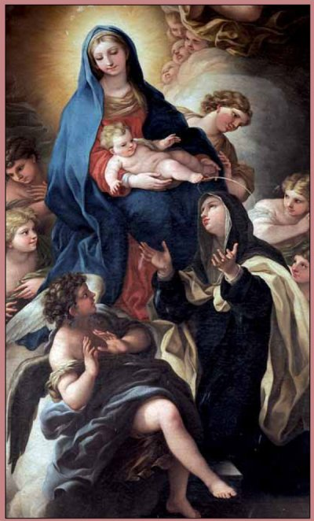

"SANTA MARIA MADALENA DE PAZZI"


"È UMA SANTA QUE BRILHA INTENSAMENTE NA CONSTELAÇÃO CELESTE POR SUA PROFUNDA ESPIRITUALIDADE, REFLETINDO NOS SEUS ESCRITOS DE MODO ENTERNECEDOR E ADMIRÁVEL, A DIGNIDADE E A BELEZA DA VOCAÇÃO CRISTÃ".
=ÍNDICE=
 - PRELÚDIO
- PRELÚDIO